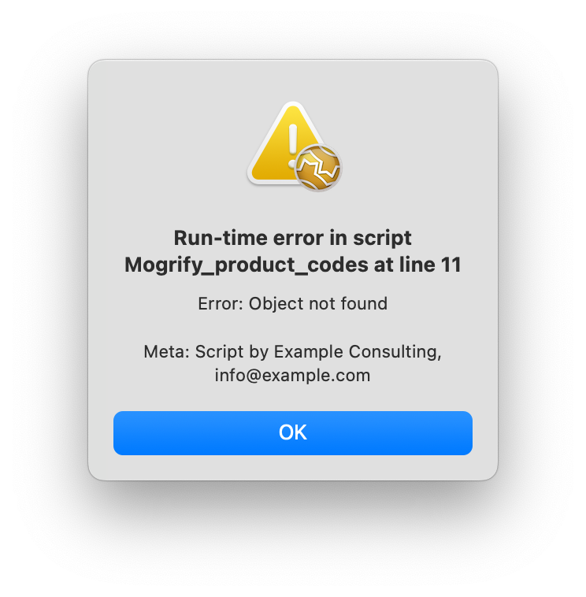
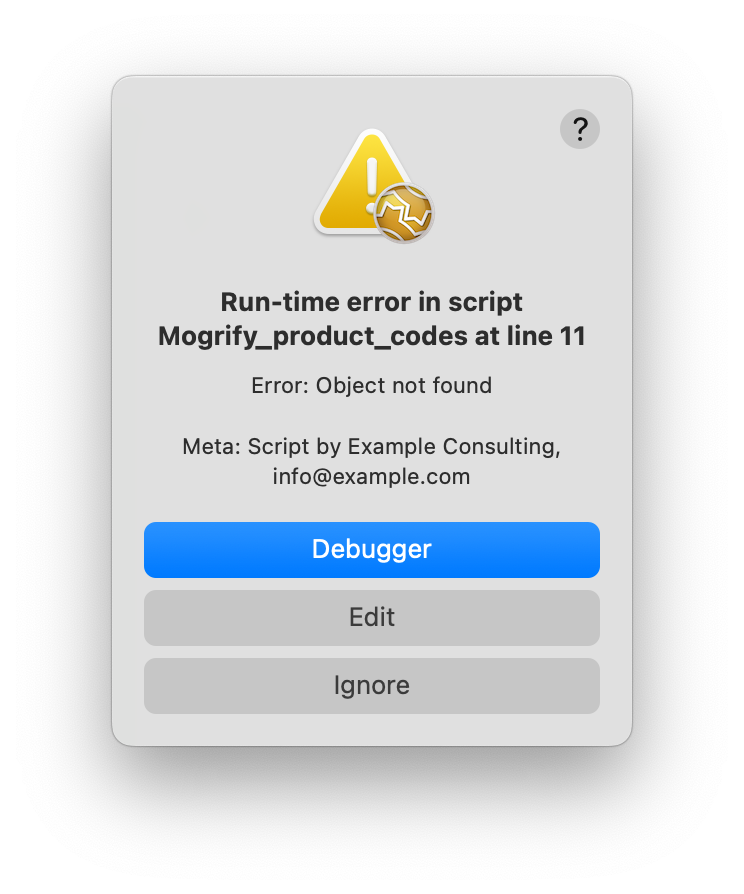

MoneyWorks Manual
The MWScript Debugger
MoneyWorks 9.2.1 and later has a debugger for the MWScript scripting language. The debugger can be used to proactively debug scripts by setting breakpoints and stepping through the script line-by-line, or it can be entered if a runtime error occurs, or a long-running operation needs to be interrupted.
Debugging runtime errors
For a regular user who does not have the Scripting privilege, there is not much they can do about errors in the scripts you deploy, other than reporting the bug to you so that you can fix it. For that reason, every script you deploy should have a constant meta declaration with a string containing your contact details. This string will be shown to the user in error alerts.

For someone who does have the Scripting privilege for the document, a runtime error will come with the option of dropping into the debugger, or opening the scripts window at the point of the error.

Edit selects the line in the script editor. Ignore just aborts execution of the current handler call from MoneyWorks without unloading the script (same as Debugger Stop button). Debugger opens the debugger at the offending line.
Infinite loops
The MWScript virtual machine does not know that this is an error, so will happily follow your script's instructions to endlessly perform a loop with no possible exit condition, or — even worse — endlessly put up alert boxes. In the first case, after a few seconds, MoneyWorks should show an indeterminate progress window with a message "A script is running....". Since you have the Scripting privilege, this window will have an enabled Stop button. You can use this to immediately drop into the Debugger. Here you can examine the script to see what is happening, and you can use the Debugger's Stop button to abort execution of the current handler and return control from your script to MoneyWorks. Stop does not deactivate the script, so MoneyWorks will continue to call your handlers as appropriate. If it calls your handler again and you're back in the loop, the bigger hammer is the Deactivate button, which will deactivate the script without calling the Unload handler.
In the case of an infinite loop of alert boxes, there will be no delay long enough for an indeterminate progress window, so in this case, hold the Ctrl+Shift keys down when clicking a button in the alert. Prior to v9.2.1 this would offer the opportunity to disable the script. From v9.2.1, it will enter the debugger.
Breakpoints
While developing or testing your script, you can proactively enter the debugger from any point in your script by setting a breakpoint in the Scripts window. Click in the darker grey breakpoint margin next to the line number of the line(s) that you want to stop at. A white blob will be placed, indicating a breakpoint. When your script reaches that line, the debugger will be invoked.
You must leave the script window open while debugging. Breakpoints are discarded if you close the script window or select a different script in the Scripts window.
When you set a breakpoint on a line that does not correspond exactly to a virtual machine instruction, you will find that the debugger window displays the breakpoint on the line that does correspond to a virtual machine instruction.